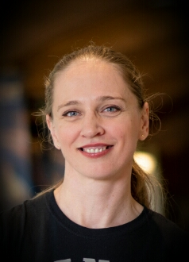

With a decorated background in professional sports — including five Hungarian Boxing Championship titles, two European Boxing Championship bronze medals, and a European Kickboxing Championship bronze — I bring focus, resilience, and a strong work ethic to my career in tech. After transitioning from quality assurance in the vitamin manufacturing industry, I followed my long-standing passion for technology and graduated from SheCodes in May 2025 as a Front-End Developer. My studies have covered HTML, CSS, JavaScript, Bootstrap, GitHub, Netlify, React, Axios, Python, AI, responsive design, and more. I’m currently deepening my knowledge of back-end technologies, working toward becoming a full-stack developer who builds thoughtful, user-focused digital experiences.
